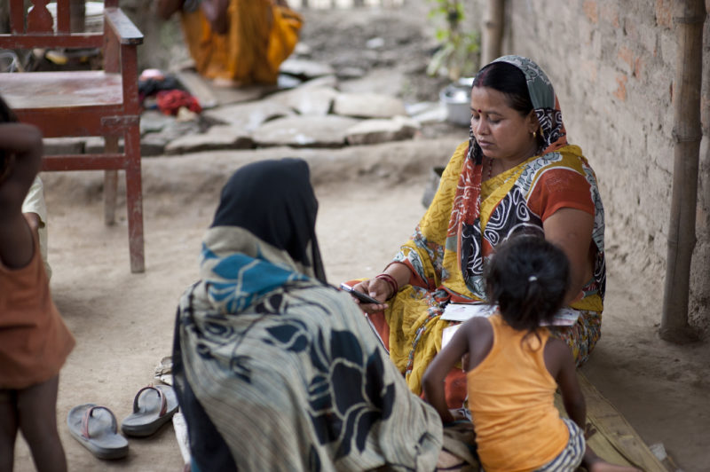
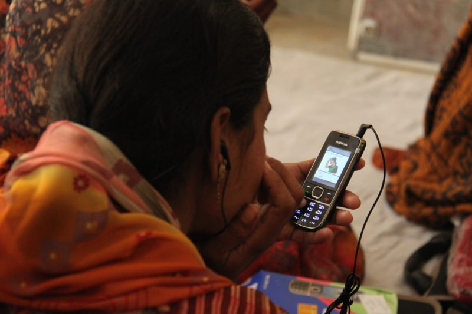

You can’t just dive into the build phase.
Careful planning goes into the framework your app is built around and workflows that make it up.
The process of designing a mobile data collection app involves both (1) defining who will use your app and (2) determining how to best structure the app with the right modules and features.

Design your tool so that your workers can spend more time interacting with beneficiaries
Let’s take a deeper look at how to approach this task:
Identify user stories
Your first step is to identify the users and user stories to build your app around. These should be centered around the biggest pain points and opportunities for impact you identified in scoping-not just the loudest voice in the room.
Here are a few key questions to consider while developing this list of user stories that should help open your eyes to the potential impact of your tool:
- How will my app change existing processes and roles?
- How will those changes affect each player in the system?
- Are those changes addressing pain points and improving workflows, or just complicating things?
Validate your user stories and the answers to these questions with your team before you start designing the technical structure of your solution to avoid building an app that is misaligned with your project and end users’ needs. They should be able to answer your questions in a way that indicates whether your new mobile data collection tool will be well received and regularly used.

Map out every reason your frontline workers might use your mobile data collection app
Design the structure of your system
Once you validate your user stories, it is time to translate these into your app’s module and form structure. Do this before you start building to ensure your vision is possible with the set of features at your disposal. Essentially, it’s about confirming whether your chosen platform can do precisely what you need it to.
Approach this task systematically by starting with a simple table like the one below. Translate your user stories you have defined and validated into individual requirements, you answer the question of what you need your app to do. Those requirements then become a summary of modules (groups of forms), individual forms, and features, which define how your app performs tasks:
- Module Type: Case List
- Case Type: Participants
- Module Type: Registration Form
- Case Type: Participants
Minimize Duplicates (Registration From Case List)*
*Usability feature highlight: Minimize Duplicates (or Registration From Case List) allows you to place your registration form at the bottom of your participant case list, so the user can go from searching the existing cases to registering a new one seamlessly.
Find out the best way to phrase your questions to avoid bias. Even in Burmese.
Content Design
Once you have organized your workflows, content design will help you develop the survey itself by formulating questions whose responses will best inform the goals of your project. It’s not just about putting all the questions you can think of in the survey.
Content design involves setting up clear questions that avoid bias, maintain consistency in phrasing, and are culturally appropriate. It’s about asking, “what effect has this program had?” and not “how has this program helped you?”
The primary components of content design are avoiding bias and cultural adaptation, and there are even some widely-used, validated surveys available that could be exactly what you need.
Avoid bias
Avoiding bias is one of the hardest jobs of a survey developer, as the way you ask a question will impact the answer you receive.
To capture the full range of possible answers, the phrasing of your questions should remain neutral, which can be easier said than done. Depending on the topic, it can require extensive knowledge of the subject, including public perception, power dynamics, and even controversies within the field.
A poorly designed question would ask, “How often do you exercise?” offering “regularly” or “occasionally” as answers. A better option would provide more precise and quantifiable answers:
“How often do you exercise?”
[ ] Twice a week or more often
[ ] Once a week
[ ] Less than once a week
Another area to pay close attention to is the phrasing of questions that are intended to elicit more subjective responses (i.e. opinions, feelings, or beliefs). The way you pose the question can influence beneficiaries’ responses in ways that may be unintended.
Cultural differences
Context matters.
Cultural references and word selection in survey questions may lead to variability in interpretations of the questions when applied to different populations.
One example of this that had an effect on project outcomes comes from Ethiopia, where the Red Cross logo was used as a hospital icon, but locals interpreted it as the symbol for a butcher.
Considerations like this should be balanced with the overall goal of the program, as a culturally-specific reference may help get a reliable answer for one beneficiary, but if the sample is ever expanded, then you may run into issues.
There are three different approaches to overcoming these kinds of cultural references:
- Translating questions: Asking the same question, but in the target audience’s language. This standardizes responses and is the best way to compare data later on.
- Asking different questions: This approach is about finding appropriate examples that each population will find relevant. Your data will be more accurate, but you will have to standardize the answers.
- Mixed approach: You can also ask standard questions (translated as appropriate), but vary the responses based on cultural context .
Validated surveys
Why recreate a survey instrument when there may be one that already exists that is well-aligned with your project objectives? There are databases of existing, validated surveys that would allow you to reliably assess and compare your results with those of other projects in the broader community.

The way you ask your questions can affect the responses you get. Find the best method for your users.
Delivery Design
How you deliver a question is just as important as how you phrase it. Determining the optimal delivery method is all about how to best structure and disseminate your survey. The survey structure and mode of communication are the primary considerations in this category. This means that once you have organized your user stories and workflows, you need figure out a proper sequence for them.
Survey structure
The structure of a survey, including the sequencing of questions and their available responses, will affect the data it provides you. Here are a few considerations for how you might recognize and solve these situations:
Do certain questions depend on others?
If you have questions that will only make sense within the context of a previous answer, you can use skip logic (also known as display conditions) to control when they appear. Deciding which questions should appear (or disappear) depending on the answer to a prior question (or questions) is important for collecting clear, consistent data.
Which questions are required?
Often, with paper forms, you will find that important fields are left completely blank. This can render the whole submission useless. The ability to deliver surveys electronically has made it possible to reduce the potential of incomplete datasets by requiring certain questions be answered before submission.
What type of answers are you expecting?
When developing a structured-entry survey, you may want to consider whether a given question accepts only one response or multiple responses. While paper forms cannot enforce the number of responses that a respondent can provide, an electronic survey can. Furthermore, you may want to use validation conditions to restrict the type of responses that can be accepted and ensure your enumerators correct mistakes on site that they might not otherwise notice until it is too late.
Mode of communication
This consideration is focused mostly on the user experience and how it can affect the reliability of the responses you receive.
For instance, if you have a short survey, and your respondents have access to smartphones, you may want to consider an SMS-based data collection program. However, if you are unsure of your audience’s access to mobile phones, you may unknowingly restrict and bias your sample, based on the type of person who has access to a mobile phone in that population (e.g. male heads of households).
On the other hand, if you have many open-ended questions that require longer text responses, you may want to consider collecting responses verbally and/or entering responses via tablet or computer.
Spend time designing your mobile survey for a more enjoyable user experience.
Design in a nutshell
Designing your mobile data collection app is about understanding:
- What your app will be used for,
- How the tool you chose can facilitate that use,
- How to write the questions you ask to avoid bias, and
- How the sequencing and delivery of questions are just as important as the questions themselves.
This is the heavy lifting you need to do before you can start building, but a thoughtful approach will provide you with a solid foundation for your app. And the more work you do in this phase, the easier the next.